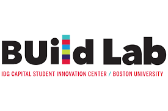

Roebling Labs protects bridge users from vessel collision using real-time transponder (AIS) tracking and computer vision. We combine vessel trajectory forecasting with AASHTO bridge impact analysis to continuously assign a threat level to each vessel within 30 nautical miles of the site.
Roebling Labs was founded by Scott Snelling, P.E. in 2024 with startup funding from Bentley Systems, the maker of Microstation CADD software. We also received an early grant from the BUild Lab startup ecosystem at Boston University. Our founding vision was to build innovative bridge assessment tools.
Roebling Labs is now a resident company at The Engine. The Engine is a non-profit startup incubator that was "Built by MIT to accelerate early-stage Tough Tech companies." In this context, Tough Tech is defined as "transformational technology that solves the world's most important challenges through a convergence of breakthrough science, engineering, and entrepreneurship."
Roebling Labs offices are located within The Engine at 750 Main Street in Cambridge, Massachusetts where we are co-located with other Tough Tech startups and venture capital firms.
In response to NTSB recommendations resulting from the Francis Scott Key Bridge collapse, Roebling Labs is fully committed to leading the bridge industry in providing vessel collision warning systems to protect the travelling public.

